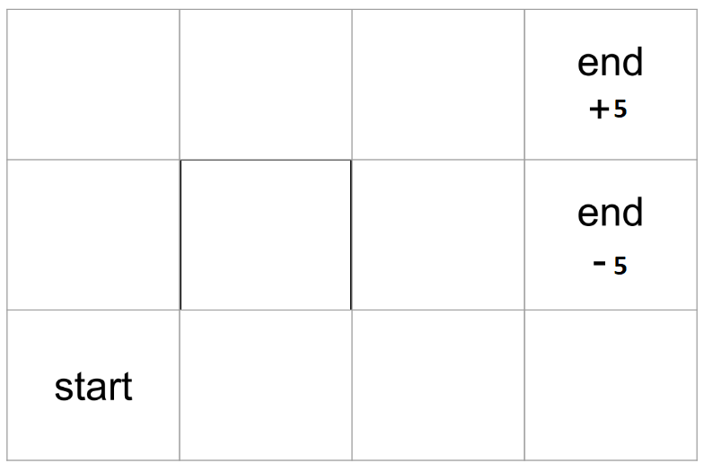

The basics-Gridworld
This is the example that everybody uses to start RL with. It is mandatory : ) Consider a 3x4 grid, the goal of the agent is to start from a position on the grid, and navigate its way to end: +5**(and not at **end: -5)
{kind=link}
In my implementation, I’m giving the agent a reward of -1 if it lands on any other position. People usually have a wall at (1,1) (0-indexed notation : ) ), that’s up to you. You can put up a wall there too.
Dynamic Programming
Iterative Policy evaluation:
In common terms, given a policy, tell me how good it is. A state in grid world is the position on the grid. Let’s say the policy we want to evaluate has only action that can be taken from a position. This is how the pseudocode would like:
delta = 0
while True:
for s in allStates: # Policy update loop
cached_V = V[s]
a = policy[s]
s2, r = agent.move(s, a)
V = r + gamma*V[s2]
delta = max(delta, np.abs(V - cached_V))
if delta < epsilon:
break
We break as soon as the max change in one update loop is less than a small value, epsilon
Policy Improvement:
Great! So we now know how to evalue a policy. But the main goal of RL is to find out the best policy. This is pseudocode for policy improvement:
while True:
evaluatePolicy()
isPolicyStable = True
for s in allStates:
actionAsPerCurrentPolicy = policy[s]
# The next few lines will try to find the best action to take from current state.
values_list = {"L": float(-inf), "R": float(-inf), "D": float(-inf), "U": float(-inf)}
for a in allPossibleActionsInState[s]:
s2, r = agent.move(s, a)
values_list[a] = r + gamma*V[s2]
newAction = max(zip(values_list.values(), values_list.keys())) # Essentially argmax : )
if newAction != actionAsPerCurrentPolicy:
isPolicyStable = False
currentPolicy[s] = newAction
if isPolicyStable: break
Monte Carlo:
“Sample mean is an estimate of true mean”